Alone after the breakup, a man finds a motorcycle he wasn't looking for and rides it out of the night city, through loneliness and swagger, into a morning he can believe in.
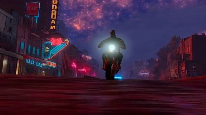
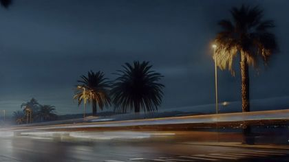
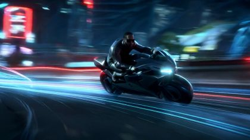


The poem
It opens with a chance meeting: 'I wasn't looking for a ride, but here you are, blissful and oddly sensitive'. The bike is a creature that has seen 'both the dark and the light worlds I've known', and he 'rub[s] my aggressions into your steel coverings' before hopping on 'to amuse myself'. The first half is night riding, with loneliness defined twice ('having everything with no one to tell, being everywhere with no one to love') and covered over with swagger: 'I let the noise block the noise', eyes turn, heads twist, 'the magic still exists'.
The turn is 'All preparations to live and dream in darkness I no longer desire.' After it the moon settles, 'the tease of distant stars subsides', and he sees 'a morning ahead for me', ripe with 'sunlight that's deceptively warm': birds, nests, a chill under the warmth. At the end the words he used for the bike come back for himself: 'blissful and oddly sensitive' becomes 'blissful and oddly innocent'. The governing images are steel and glint ('double-click'), light streaking at night, the setting moon and the stars going out, and dawn birds coming out of the night that 'has covered me'.
Look
Night is all practical light: neon, headlights and streaks; the puppet is lit from the front by the bike's own lamp. Morning comes as a hard sweep from right to left: a tracing-paper sky that warms while the cut-out mountains stay cool and blue-grey. The bike is the most worked object in the kit: black-gouache card with real silver-leaf chrome edges and a varnished tank that takes a code glint, and visible scuff strokes where his palm worked it.
Our best elements
The strongest things we already have for this poem: generated footage, Atlantis views, found film and painted kit sheets.
the generated beat after he mounts (10.2a); palette key for the night
Headlight glare, magenta neon and a starry sky in one frame; the poem's colour world
far plate for atlantis_streets / outskirts behind the riding puppet
Figure-free, streaks already moving left to right; the puppet bike can hold centre
intercut on 'I let the noise block the noise'
Pure speed; reads as noise. Sport bike shape, so use it for motion, not the hero design
shore_decaying_chapel plate for 10.6c/d
Exact set, figure-free, cold morning silver light, wet sand mirror
close plate at the dismount; the doorway is the archive surface
A large vertical frame lit warm; a near surface, not a far one

10.5 forks / flock far layer
Path leading in, birds already in the sky; figure-free
10.3 outskirts, moon settling; the passage plate
Moon over a ruined skyline, no figures; the colour of the last of night

edge of the city before the mountain road (10.3b)
Figure-free; mountains and a low horizon where the pale patch can open

atlantis_sidewalk_night: the window behind the parked bike
Lattice windows lit warm, vertical panes; crop out the tiny figures inside
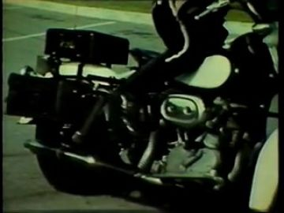
bike design reference; answer film in the shop window on L03
Close on a black motorcycle tank and engine, period grain
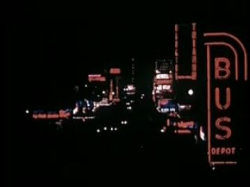
vertical neon slab streaming past in 10.2
Red neon on black; a tall bright surface that reads even at speed
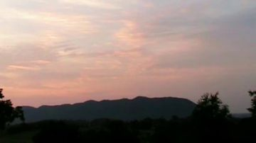
'a morning I could believe in' in the chapel doorway / the dawn sky
Pink dawn over a ridge line; bright and simple
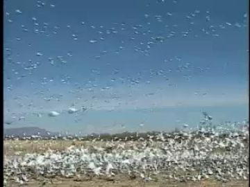
bird_burst / flock on 'spring out of the night'
Thousands of white birds lifting; reads at any size
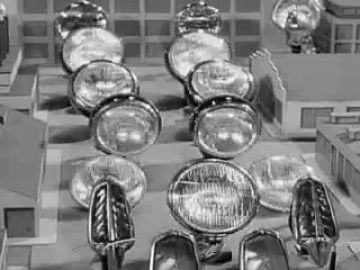
the double-click glint (10.6b)
Rows of chrome headlamps, a found image of glint itself
What we need
- No motorcycle prop: needs four views plus a tank close-up with scuff states, designed from scratch (black cafe bike, round lamp, raked fork)
- No seated-astride POET: the replacements pack has chair-sit, kneel, lie and crouch, but no rider pose with legs split around a tank
- family.10 sheet has only 'stand · front' with no WHO image; the watchers need threequarter and profile bodies with heads turned to follow
- No generated mountain road with switchbacks or a fork; nearest gen hits are wrong (fields, flowers); find or make one
- No nest tree; archive Wind In Trees 5 is a tree with no nest
- No sunglasses-reflection cards (streetlights sliding across the lenses)
- No figure-free head-on night street to replace the rider plates where the puppet must ride
Characters
POET kit →
The rider: finds the bike, rubs his anger into it, rides the night city out into morning, dismounts at the chapel
Costume. red_black_sunglasses: black track jacket with red piping from shoulder to cuff, black track trousers, black Chelsea boots, black sunglasses (lens card takes reflections); no helmet
Expressions. surprised, strain (rubbing), calm (swagger, chin up), recognition (head lifts to the horizon), awe, joy: small unguarded smile, tired (dismount)
Hands. in_pocket, flat_push(motorcycle_tank), grip(motorcycle_seat), grip(handlebar_L), grip(handlebar_R), open (in the wind)
Cards to paint. seated-astride body: profile, threequarter, threequarter_back, back; crouch-to-mount body; head: smile (joy); head: chin up; head: tilted up (recognition); sunglasses lens reflection strips; hand: flat palm rubbing; hand: open into wind; hands: grip bar L/R
poet.10 sheet lists the right six poses (lean, crouch, sit 3/4, sit profile, sit 3/4 back, sit back) and six hand slots, but every slot is unpainted and there is no bike silhouette to paint the sit poses against, so leg angles will be guessed. The WHO panel is right.
Its action sheet for this poem is on Character Kits v2.
open the action sheet →| action | beats | how the card does it |
|---|---|---|
| rub the tank | leans in → palm lands flat → three hard circles → holds pressed → lifts off, steel scuffed | shoulder + elbow + wrist brads; flat_push hand card moves on a small circle path; swap tank card to 'scuffed' at release |
| hop on | hand to seat → knees load (crouch) → right leg swings over → drop into seat → both hands to bars | crouch body card → swap to seated-astride body (the far leg is hidden behind the bike card); hands replaced by two grip cards pinned to the bars |
| swagger ride | chin lifts → head turns slightly to the watchers → hold → back to the road | neck brad 8° up; lens card slides a reflection strip across |
| hand opens into the wind | left grip loosens → hand leaves the bar → opens palm out → held → stays open | left forearm on elbow brad rotates up 30°; swap grip to open hand; one held position |
BROTHER, FRIENDS, ELDERS, COUPLES kit →
Roadside watchers: eyes turn, heads twist as he passes (10.2c, 10.6a)
Costume. street_clothes: plain everyday coats, a cap, a headscarf; muted against his black-and-red
Expressions. awe, head turned to follow
Hands. relaxed, one pointing
Cards to paint. 3-5 bodies threequarter and profile; front, profile and back heads per watcher
family.10 sheet offers only 'stand · front' with no hands or WHO; the shots need threequarter/profile bodies and three heads each for the twist.
Its action sheet for this poem is on Character Kits v2.
open the action sheet →| action | beats | how the card does it |
|---|---|---|
| head twist | facing street → bike passes → head swivels to follow → hold looking after him | neck brad only; head swap front → profile → back-of-head as he passes |
Props
Sorted by priority. Each has its design, how to build it, the references found in the archive and our footage, and a prompt for its card sheet.
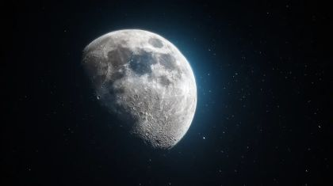
setting moon, low and large
60 cm cream disc with a hollow centre for an archive moon; states: high, low on the skyline, half behind it
References found
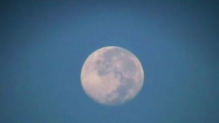
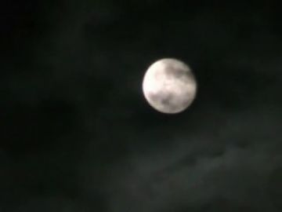
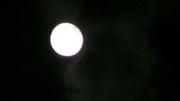
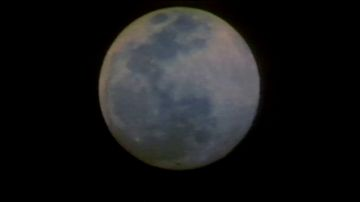


Generation prompt
Prop card sheet: a large setting moon as a flat cream disc with grey maria; flat corrugated-cardboard card, gouache + confident ink line, raw kraft cut edge, brass brads where it hinges, flat-on even light, plain background. Separate cards: full disc; disc with hollow centre ring; half disc cut by a skyline edge.
black naked cafe motorcycle: chrome-edged steel tank, round headlight, raked fork
Layered card 210 cm long: frame, tank, seat, fork and wheels as separate pieces on brads so the wheels turn; silver-leaf edges; states: parked on kickstand, riding, tank clean, tank scuffed, headlight on/off
References found
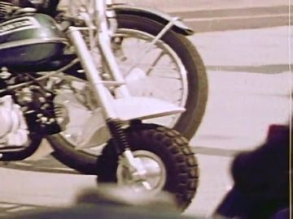
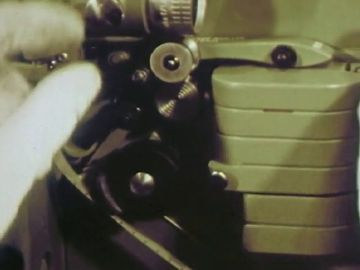
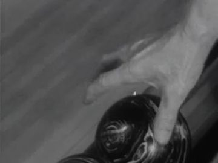
Generation prompt
Prop card sheet: a black naked cafe-racer motorcycle, chrome-edged steel fuel tank, round headlight, raked front fork, flat seat; flat corrugated-cardboard card, gouache + confident ink line, raw kraft cut edge, brass brads where it hinges, flat-on even light, plain background. Separate cards: full bike profile on kickstand; threequarter front; threequarter back; front wheel; rear wheel; tank clean; tank with scuffed palm circles; headlight lit; headlight unlit; kickstand up; kickstand down.
the tank alone for the inserts (10.1b, 10.2d, 10.6b)
60 cm card, black gouache with varnish; states: plain, scuffed, glint, double glint
Generation prompt
Prop card sheet: close-up of a black motorcycle fuel tank with chrome trim and filler cap; flat corrugated-cardboard card, gouache + confident ink line, raw kraft cut edge, brass brads where it hinges, flat-on even light, plain background. Separate cards: tank clean; tank with swirling palm scuffs; star-shaped glint; second smaller glint.
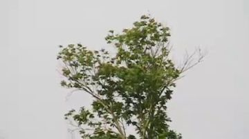
lone roadside tree with a twig nest
400 cm tree card with a separate nest card and 6 bird cards; states: birds in, birds bursting
References found
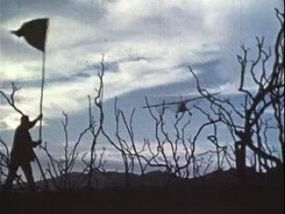
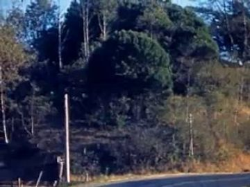
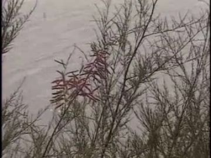
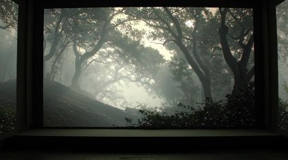
Generation prompt
Prop card sheet: a lone windblown roadside tree with a twig nest in a fork, and small dark birds; flat corrugated-cardboard card, gouache + confident ink line, raw kraft cut edge, brass brads where it hinges, flat-on even light, plain background. Separate cards: tree; nest; bird wings up; bird wings down; bird gliding.

the 'tease of distant stars'
black card sky pricked with pin-holes, back-lit; holes cover over one by one
Generation prompt
Prop card sheet: a black night-sky card with scattered four-point stars, plus loose single star cards; flat corrugated-cardboard card, gouache + confident ink line, raw kraft cut edge, brass brads where it hinges, flat-on even light, plain background. Separate cards: sky with stars; sky blank; 6 single stars.
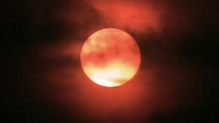
morning sun disc
70 cm warm disc with a flare card; states: rising, full
References found
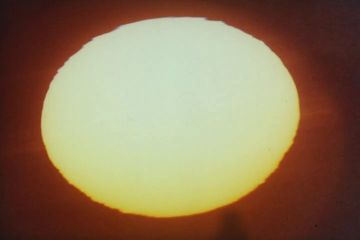
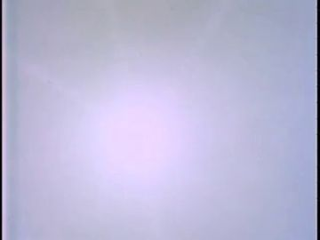


Generation prompt
Prop card sheet: a morning sun as a flat warm disc with a cut-paper flare; flat corrugated-cardboard card, gouache + confident ink line, raw kraft cut edge, brass brads where it hinges, flat-on even light, plain background. Separate cards: half-risen disc; full disc; flare star.
other vehicles as streaks
long thin strips of white, red and cyan card on a fast track
References found
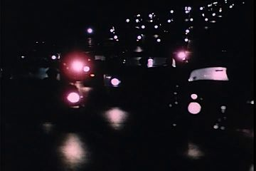
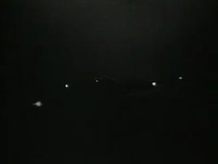
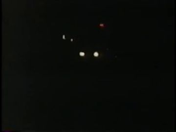
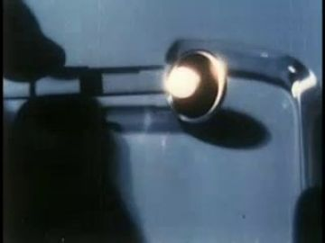
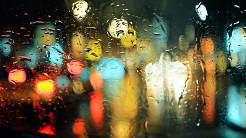
Generation prompt
Prop card sheet: headlight and taillight streaks as long tapering strips; flat corrugated-cardboard card, gouache + confident ink line, raw kraft cut edge, brass brads where it hinges, flat-on even light, plain background. Separate cards: white streak; red streak; cyan streak; scooter silhouette.
Places
atlantis_sidewalk_night
A quiet sidewalk late at night: one lit shopfront, a kerb, a parked bike under the moon; nobody else
Where the archive opens: the shopfront lattice window behind the bike (vertical, lit, large); the bike's chrome tank (small); the wet kerb (weak)
References: our footage, Atlantis views, found film
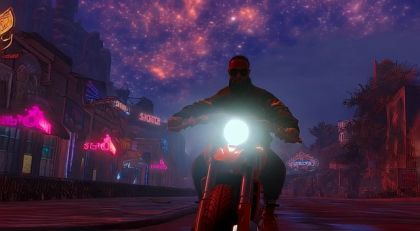
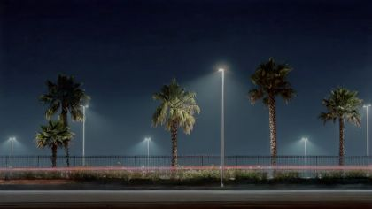

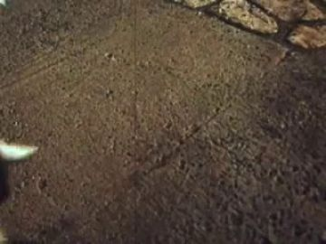
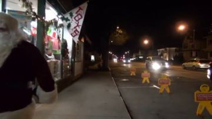
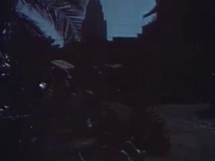
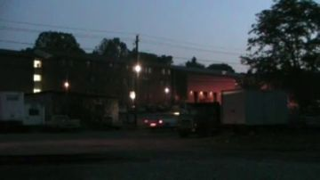
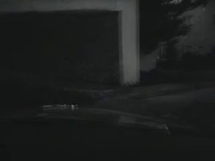
Generation prompt
Night plate, no people: an empty Atlantis sidewalk at a kerb, a single lit shopfront with lattice windows, blue mist, a street lamp, violet starry sky with a high moon, clear kerb space at frame right for a parked motorcycle; 35mm, wet ground
atlantis_streets
The city as streaming light: neon, palms, buildings, traffic smeared; the bike holds centre
Where the archive opens: passing vertical neon slabs; shop windows sliding by; the sunglasses lenses (reflection)
References: our footage, Atlantis views, found film


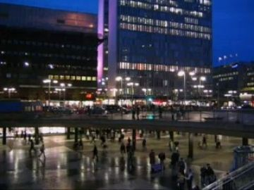
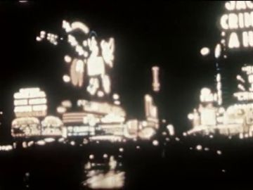
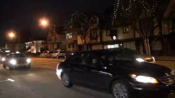
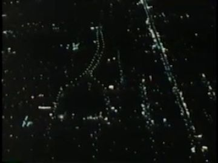
atlantis_outskirts
The last buildings fall away; indigo skyline behind, the moon dropping into it, stars going out, a pale patch low in the east
Where the archive opens: the moon disc (large, near the skyline); the lit window in the tall ruin of view_087; the pale horizon patch
References: our footage, Atlantis views, found film


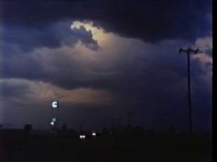
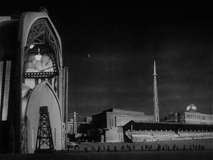
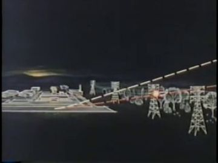
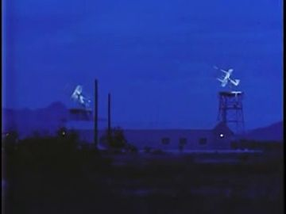
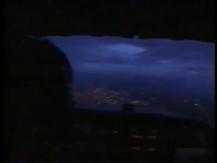
Generation prompt
Wide plate, no people: a road leaving a ruined indigo city at the last hour of night, the skyline behind, a large moon setting into it, the stars thinning, a pale band opening low on the opposite horizon; 35mm
No plate yet.
mountain_road
Switchbacks above Atlantis at first light: the sky is replaced from right to left; a lone nest tree; the road forks
Where the archive opens: the sky itself as a huge screen at dawn; a rock-cut tunnel mouth; a road sign
References: our footage, Atlantis views, found film


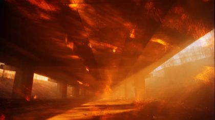
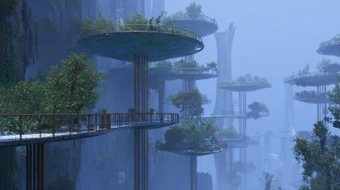
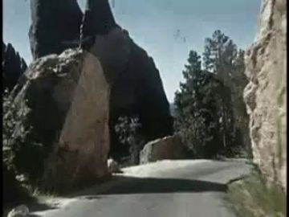
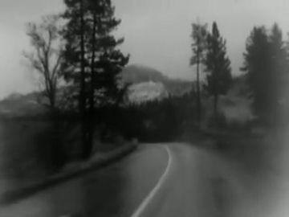
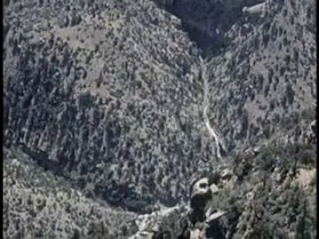
Generation prompt
Wide dawn plate, no people: a mountain road of switchbacks above a far coastal city, the road forking into two near the top, a single windblown tree with a nest beside it, night retreating at the left while warm dawn light sweeps in from the right; 35mm, cold air, top-down three-quarter angle
shore_decaying_chapel
An undeveloped shore with a roofless stone chapel, tide pools, a grey cold morning; end of the ride
Where the archive opens: the chapel doorway (gen_09d9df4ac6, vertical, warm); empty window arches; the wet-sand mirror (weak)
References: our footage, Atlantis views, found film


Effects
| effect | how, in this cut-out world |
|---|---|
| tank_glint / tank_glint_double | A four-point star card that blooms in code on the tank's varnish; twice in quick succession for 'double-click'; intercut Auto-Lite on Parade headlamps |
| motion_smear / light_streaks | The background runs on a fast loop while the puppet stays locked; long strip cards whip past in front; light code motion blur on the far layer only |
| sunglass_reflections | A thin strip of streetlight colour sliding across a mask cut to the lens shape |
| stars_subside | Pin-holes in the black sky card closed one by one in code; a few Snow Queen sparkles go out last |
| horizon_glow / dawn_sweep | A back-lit tracing-paper sky with a warm gradient wiping right to left over the cut mountains |
| sun_flare | A cut-paper flare star on the lens layer as the sun reaches his face |
| bird_burst / flock | Six painted bird cards flap on brads near camera; Bosque del Apache geese film behind for the mass |
| breath_vapor | A wisp of tracing paper puffed out from the mouth line and faded, twice |
The puppet passage
his line · 10_L10
“The moon settles and the tease of distant stars subsides”
the archive answers · WHY SPACE (1957)
“light from distant stars to chart future voyages into space.”
a hand that opens and stays open · a glass pane of the skywalk over the indigo city
Keep. L10 is the right fulcrum and 'a hand that opens and stays open' is the right single gesture; WHY SPACE ('light from distant stars to chart future voyages') turns the stars from a tease into a chart, as the poem does.
Better. In view_087 the moon is tiny and far and no skywalk pane is visible, so the surface is weak. Bring a large hollow moon card close to the skyline and play WHY SPACE inside the moon, or build a near cardboard glass pane at the left third. Stage him astride the idling bike at the city edge (threequarter_back), the left hand leaving the bar and opening, so the gesture connects to 10.5c instead of a standing pose that exists nowhere else in the poem.
Other lines that could carry one:
- L03 'So I rub my aggressions into your steel coverings': flat palm pressed on the tank, held; Cycle Logic, Cycle Safety opens in the lit shop window of view_096 behind the bike
- L04 'Loneliness is having everything with no one to tell': head lowers over the bars, grip held; How Man Made Day neon opens in a tall slab as it slows past
- L11 'and I can see a morning ahead for me': head lifts (replacement head up), hands on bars; Morning Mountain 6 opens in the pale horizon patch, made large
- L13 'ripe with sunlight that's deceptively warm': standing at the chapel, breath showing, hands in pockets; Sun Emerges opens in the chapel doorway (gen_09d9df4ac6)
- L16 'I want to live in this feeling forever': left hand open into the wind; Bosque del Apache geese open in the sky above the fork
Scene ideas
- Found bike: on L01 the camera is on the bike, not on him; Cycle Logic, Cycle Safety (arch_599801ce-6bf5) plays in the view_096 shopfront window while his paper hand comes into frame and lands on the tank
- Paper becomes footage: the instant he drops into the seat, hard-cut to the generated head-on rider gen_8453d7ae20, then back to the puppet profile on gen_a56ee325c0, as if the ride flips him between materials
- Neon as buildings: the street's mid layer is made of archive slabs (How Man Made Day arch_764af7c9-b7d5, Coney Island at Night arch_8a1c6086-8140) sliding past at speed behind the locked puppet
- Loneliness beat: on 'no one to tell', all streaks stop; the bike idles alone on view_062's red-neon corridor reflection; the only motion is the lens reflection
- Leaving the city from above: Dusk to Dawn (arch_69797ec6-faf8) aerial city lights as the far layer of 10.3, shrinking as the moon card drops into view_087
- Stars subside: gen_ca6878be91 milky-way field with Snow Queen sparkles (arch_bfbcbfa6-1e8b) going out one by one on L10
- Nest burst: the bike passes the paper nest tree; Bosque del Apache geese (arch_c4bfcc20-1d50) lift behind and Blackbirds On A Wire (arch_09885806-e247) on the line 'tripping of birds'
- Cold end: dismount at gen_e315da34f9; breath vapor twice; the chapel doorway gen_09d9df4ac6 holds Morning Mountain 6 (arch_0fcf01e8-d792) while he stands, hands in pockets
References to look for
| what | where to look |
|---|---|
| motorcycle design and riding | archive: 'Cycle Logic', motorcycle safety films 1960s-70s, 'When You Grow Up'; cafe racer side elevations |
| night city as light | archive: 'Coney Island at Night', 'Dusk to Dawn', neon sign films, 'How Man Made Day'; Saul Leiter colour night street photographs |
| riding cut-outs and speed in paper | Lotte Reiniger travel sequences; Yuri Norstein 'Hedgehog in the Fog' (layered glass, fog); Kara Walker cut-paper silhouettes |
| dawn in the mountains, birds | archive: 'Morning Mountain', 'Sun Emerges', wildlife refuge films (Bosque del Apache), 'Blackbirds on a Wire' |
| Black man on a motorcycle, cool and alone | Ernest C. Withers and Gordon Parks street portraits; Kevin Jerome Everson short films |
| ruined chapel by the sea | archive: 'Lens, Hollands dorp in Frankrijk' (ruins), 'Safe In Port'; Caspar David Friedrich 'Abbey in the Oakwood' |
Our footage for this poem
The 20 generated clips and 8 Atlantis views closest to the poem (CLIP, image against its treatment and lines).


The kit
| status | kind | item | source |
|---|---|---|---|
| need | body | POET seated-astride body (profile, 3/4, 3/4 back, back) + crouch-to-mount | poet.10 action template; to paint |
| need | body | watchers x5 with front/profile/back heads | family.street_clothes packs; sheet needs new views |
| need | fx | glints, streaks, star closing, dawn wipe, breath | code + paper |
| need | prop | motorcycle, layered, 4 views + wheels | to generate; ref arch_599801ce-6bf5 |
| need | prop | tank close-up: clean, scuffed, glint, double glint | to generate |
| need | prop | moon (hollow), star sky, nest tree + birds, sun | to generate; archive inserts for moon/sun |
| need | set | mountain road plate | to generate |
| partial | hand | POET hands: grip bars L/R, flat rubbing palm, open in wind, in pocket | poet hands template |
| partial | head | POET heads: smile, chin up, tilted up, tired; lens reflection strips | poet.red_black_sunglasses.heads template |
| partial | set | night sidewalk plate | view_096 (crop) |
| partial | set | outskirts plate | view_087 + enlarged moon |
| partial | sound | VO 10 dry reading 96.1 s; engine idle, pass-bys, birdsong, wind | reading wav exists; fx to find |
| have | set | night streets plate | gen_a56ee325c0, gen_8453d7ae20 |
| have | set | chapel shore plate | gen_e315da34f9, gen_09d9df4ac6 |